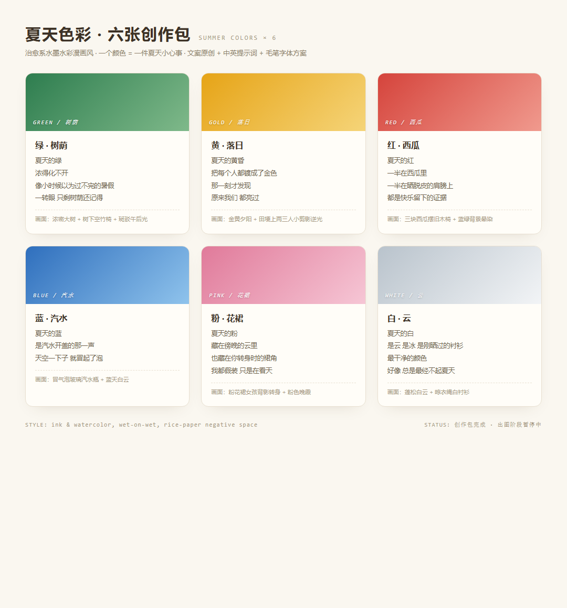

一组六张的治愈系漫画企划：一个颜色 = 一件夏天小心事。文案全部原创，配好中英提示词与毛笔字体方案，随时可以进入出图阶段。
创意从哪来、怎么落地、守住什么边界。
绿树荫、黄落日、红西瓜、蓝汽水、粉花裙、白云——六个颜色对应六件"夏天小心事"，每张一句戳心文案，组成一个完整的夏日色谱。
用纯文字风格提示词（水墨勾线 + 湿画法水彩 + 宣纸留白）驱动 AI 出图；AI 写不好中文字，所以画面下方留白，出图后用免费商用毛笔字体排版文案；先锁定一张的风格，再批量出其余五张。
公开物料不含任何画师人名、不上传他人原图垫图、不做商用；文案与色谱概念全部原创。字体只选免费可商用的毛笔字体。
六张文案 · 色谱创作包预览（图像生成阶段暂停中，恢复后此处会换成成图）。
